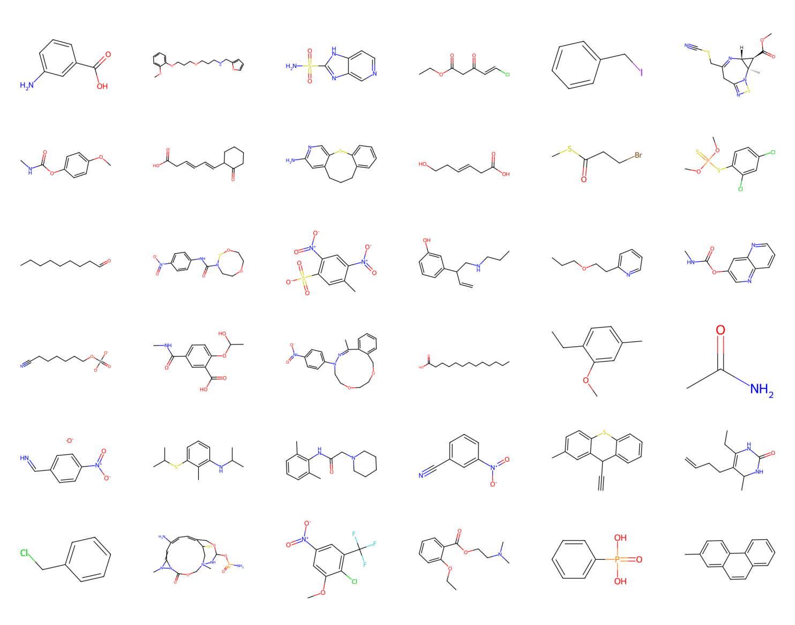
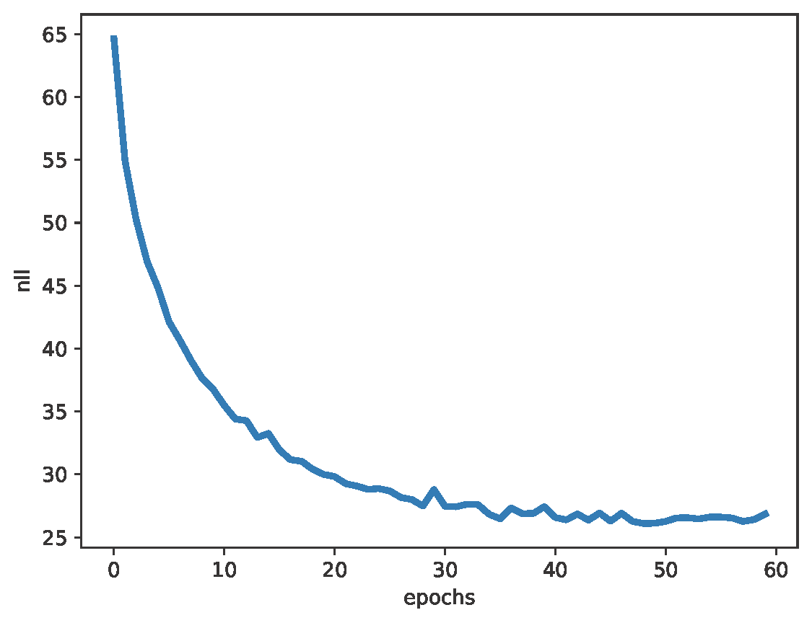

ARMs parameterized by Transformers¶
Introduction¶
As presented previously, the idea behind autoregressive models (ARMs) is relatively simple since it utilizes the product rule multiple times to factorize the joint distribution, namely: $$ p(\mathbf{x}) = \left( \prod_{d=1}^{D} p(x_d | \mathbf{x}_{<d}) \right) \ p(x_1) , $$ where $\mathbf{x}_{<d} = [x_1, x_2, \ldots, x_{d-1}]$.
We highlighted that the whole difficulty in parameterizing such a model lies in having a flexible model that can easily deal with conditionals $ p(x_d | \mathbf{x}_{<d})$. By easily we mean having a single model that outputs probabilities for whatever the inputs $\mathbf{x}_{<d}$ are. In general, it is a non-trivial requirement. s However, we showed that parameterizing ARMs using neural networks could help us in this task. Particularly causal convolutions can greatly simplify the implementation of conditional distributions and, additionally, they can speed up calculations by computing the conditional probability for a given $\mathbf{x}$ in a single forward pass. Moreover, they allow learning long-range dependencies! This last feature is incredibly important for modeling such complex objects as images. Do we need more? Are we done?
In some way, the answer is ''yes''. Autoregressive models parameterized by causal convolutions are extremely powerful, and they had set SOTA performance on many tasks for a long time! However, a curious researcher cannot simply accept that a problem is solved and stop looking further. Especially when there is a new sheriff in town: the attention mechanism! Originally, attention was utilized in neural machine translation (Bahdanau et al., 2014; Luong et al., 2015), but later was applied to processing sets of images (Ilse et al., 2018), among many other applications. In general, it has been noticed that convolutional layers operate on a fixed grid of neighbors while in NLP there are irregular connections among words. For instance, Dutch grammar requires placing words in a specific order, while Polish grammar is much more flexible. As a result, using a pre-defined neighborhood seems to be highly limiting and the attention mechanism, which allows learning long-range connections, looks like a much better approach. The idea of the attention mechanism was further extended for processing sets and sequences in the seminal paper of (Vaswani et al., 2017) that introduced transformers, an architecture built of three core components: attention layers, fully-connected layers, and layer normalization. Dropout could be useful too, and other tricks as well (after all, it's deep learning, tricks, and hacks are everything!), but these three elements are crucial and they have changed the game in many applications (especially in NLP). Let's dive into the world of transformers and how they could be used for parameterizing ARMs!
Transformers, because attention is all you need!¶
As the title of (Vaswani et al., 2017) claimed, ''attention is all you need''. As already mentioned, the attention mechanism could be thought of as some sort of generalization of convolutional layers. Assuming for a second that it is the case, then indeed we should be able to build neural networks by using the attention mechanism alone, thus, attention is the only component we need. Well, as we will see shortly, it is not entirely true, but almost.
Self-attention¶
The attention mechanism, and the self-attention mechanism specifically, constitute the core of many architectures, and transformers are based on them. How this is defined then? To better understand how self-attention works, please keep in mind that kernels in convolutional layers move along an object (e.g., a sequence, an image) and calculate responses (outputs) based on a fixed neighborhood. In self-attention, however, we will learn about this neighborhood. Moreover, similarly to multiple kernels in CNNs, we can have multiple versions of self-attention, called heads (thus, multi-head self-attention).
First, we focus on single-head self-attention, because extending it to multiple heads is really straightforward. In all of our discussions, we will assume that we have well-prepared data. This means we assume having a tokenizer that takes an input (e.g., a text, a molecule, an image) and returns a tensor $\mathbf{X} \in \mathcal{X}^{B \times T \times D}$, where $B$ - the batch size, $T$ - the number of tokens (e.g., characters in a sentence), $D$ - the dimensionality of an embedding of a token, which could be further processed by any contemporary neural networks. Formulating a tokenizer is an extremely important element of the whole system and it could be thought of as a featurizer or a pre-processing step. A lot of the success of an AI system based on transformers comes from the fact of a powerful tokenizer. But going back to our train of thought, we assume we have a tokenizer, and later on, we will briefly discuss one for molecules.
Alright, self-attention then! In fact, self-attention is very simple and requires the basic knowledge of matrix calculus or, in terms of deep learning, the knowledge of how linear layers work. It works in the following way: We first transform $\mathbf{X}$ using linear layers to obtain three new tensors: values, keys, and queries, namely (to be consistent with code, we introduce $\otimes$ to denote batch matrix multiplication, i.e., a for-loop over the batch dimension and applying matrix multiplication to each element in a batch; this is equivalent to the bmm function in PyTorch):
- values: $\mathbf{V} = \mathbf{X} \otimes \mathbf{W}_{v} + \mathbf{b}_{v}$;
- keys: $\mathbf{K} = \mathbf{X} \otimes \mathbf{W}_{k} + \mathbf{b}_{k}$;
- queries: $\mathbf{Q} = \mathbf{X} \otimes \mathbf{W}_{q} + \mathbf{b}_{q}$.
A side note: To get a good feeling about the batch matrix multiplication $\otimes$. For a tensor $\mathbf{X}$ of size $B \times T \times D$ (or in PyTorch or Numpy: X.shape = (B, T, D)), and a matrix $\mathbf{W}$ of size $D \times M$, the resulting tensor of $\mathbf{X} \otimes \mathbf{W}$ is of size $B \times T \times M$. In other words, the operation $\otimes$ calculates the matrix multiplication of $\mathbf{X}_{b} \mathbf{W}$ for $b=1, 2, \ldots, B$ and then concatenates all outputs. If $\mathbf{W}$ is a tensor $B \times D \times M$, then we concatenate all outputs $\mathbf{X}_{b} \mathbf{W}_{b}$ for $b=1, 2, \ldots, B$.
Since we talk about self-attention, we transform the same input $\mathbf{X}$. However, in general, we are not constrained to do that. In fact, the idea of attention is highly influenced by information retrieval, hence the names of the three tensors. For instance, a search text is mapped to queries, then the information in a database is mapped to keys, and the best-matched objects are values. Then the attention mechanism could be thought of as a retrieval system. It might be confusing, therefore, it is enough to say that we call the three linear layers by these names and that's it.
Once we apply these linear transformations to $\mathbf{X}$, we can move on to the core of the self-attention, namely, attention weights, $\mathbf{A} \in [0,1]^{B \times T \times T}$. Attention weights define the strengths of connections (relations) among tokens. In some way, we can think of $\mathbf{A}$ as a soft adjacency matrix of a graph that determines edges and their strengths. Thus my claim before about a possible advantage of self-attention over convolutional layers because they can learn long-range dependencies without stacking multiple layers. We can define attention weights in the following manner:
$$ \mathbf{A} = \mathrm{softmax}(\mathbf{Q} \otimes \mathbf{K}^{\top}), $$where $\mathrm{softmax}$ is calculated over the last dimension (i.e., 2), and the transposition is applied to the first dimension and the second dimension (in PyTorch: X.transpose(1, 2)). Additionally, to counteract possible large magnitudes in calculating the matrix multiplication, the argument of the softmax is scaled by the square root of the dimension $D$, namely:
Lastly, to get the outputs of the self-attention, we have to multiply values and attention weights (scaling is used almost always by default): $$ \mathbf{Y} = \mathrm{softmax}\left(\frac{\mathbf{Q} \otimes \mathbf{K}^{\top}}{\sqrt{D}}\right) \otimes \mathbf{V} , $$ and $\mathbf{Y}$ is of size $B \times T \times D$. If you do not see it, please go through all the steps again. The whole procedure is schematically presented in Figure 1.

Figure 1. A schematic representation of self-attention.
At this point, we know how self-attention works! Moreover, in Figure 1, we have a diagram of all operations and it is basically ready to be translated to code! The only missing piece of the puzzle is multiple heads. How do we define it? Well, it is really simple: We define self-attention $H$-times, $\mathbf{Y}_h = \mathrm{softmax}\left(\frac{\mathbf{Q}_h \otimes \mathbf{K}_h^{\top}}{\sqrt{D}}\right) \otimes \mathbf{V}$, where index $h$ indicates a separate set of weights, and then concatenate them along the first dimension, $\mathbf{Y} = \mathbf{Y}_1 \oplus \ldots \oplus \mathbf{Y}_H$, where $\oplus$ denotes the concatenation, that gives $\mathbf{Y} \in \mathbb{R}^{B \times T \times H \cdot D}$. Eventually, we multiply $\mathbf{Y}$ with a matrix of weights $\mathbf{W}_c \in \mathbb{R}^{H \cdot D \times D}$ that yields the output of multi-head self-attention:
$$ \mathbf{M} = \mathbf{Y} \otimes \mathbf{W}_c . $$Now we are really done! It wasn't so difficult, wasn't it? It's all about linear layers! So one may ask what's the whole fuzz about? Again, the brilliancy of self-attention comes from the fact that we learn the soft adjacency matrix $\mathbf{A}$. It allows the model to figure out how some quantities are related to each other, and using a single step it learns long-range dependencies. I like to think of attention as some sort of learning knowledge graph. I know, it is far-fetched, but if you think about it, a single multi-head self-attention determines patterns in input data (each head is a set of concepts), and then, by stacking multiple multi-head self-attentions we obtain high-level patterns in data. You must say, my curious reader, that it is fantastic in its simplicity!
Finally some code!¶
The way we presented self-attention was very close to the code. However, to implement self-attention we can use a few simple tricks to speed up computations. The most important one is about calculating keys, queries, and values. We do not need to define separate single-head self-attentions; instead, we can define linear layers that output $D \times H$ outputs and then we can just reshape tensors to $B \times T \times H \times D$ for batch matrix multiplication.
The full code is presented below.
class MultiHeadSelfAttention(nn.Module):
def __init__(self, num_emb, num_heads=8):
super().__init__()
# hyperparams
self.D = num_emb
self.H = num_heads
# weights for self-attention
self.w_k = nn.Linear(self.D, self.D * self.H)
self.w_q = nn.Linear(self.D, self.D * self.H)
self.w_v = nn.Linear(self.D, self.D * self.H)
# weights for a combination of multiple heads
self.w_c = nn.Linear(self.D * self.H, self.D)
def forward(self, x, causal=True):
# x: B(atch) x T(okens) x D(imensionality)
B, T, D = x.size()
# keys, queries, values
k = self.w_k(x).view(B, T, self.H, D) # B x T x H x D
q = self.w_q(x).view(B, T, self.H, D) # B x T x H x D
v = self.w_v(x).view(B, T, self.H, D) # B x T x H x D
k = k.transpose(1, 2).contiguous().view(B * self.H, T, D) # B*H x T x D
q = q.transpose(1, 2).contiguous().view(B * self.H, T, D) # B*H x T x D
v = v.transpose(1, 2).contiguous().view(B * self.H, T, D) # B*H x T x D
k = k / (D**0.25) # scaling
q = q / (D**0.25) # scaling
# kq
kq = torch.bmm(q, k.transpose(1, 2)) # B*H x T x T
# if causal
if causal:
mask = torch.triu_indices(T, T, offset=1)
kq[..., mask[0], mask[1]] = float('-inf')
# softmax
skq = F.softmax(kq, dim=2)
# self-attention
sa = torch.bmm(skq, v) # B*H x T x D
sa = sa.view(B, self.H, T, D) # B x H x T x D
sa = sa.transpose(1, 2) # B x T x H x D
sa = sa.contiguous().view(B, T, D * self.H) # B x T x D*H
out = self.w_c(sa) # B x T x D
return out
Causal computations. Is everything clear? It should be! But wait, what is this flag causal? Yes, you are right, my careful reader, we did not discuss it at all, but after all, we want to use self-attention as a replacement for causal convolutional layers! To be able to parameterize ARMs with self-attention, we need to ensure that we do not look into the future. Fortunately, it is very simple to achieve in self-attention, namely, we need to mask out the multiplication of keys and queries to ensure causal calculations. For instance, assuming that the first token is dummy (i.e., it corresponds to the Beginning Of Sequence, BOS), we mask values above the diagonal of the product of keys and queries. Then we ensure that there is no leakage of future tokens in the attention weights.
Positional encodings. Another point that you probably noticed, my bright reader, is that if we want to apply self-attention to sequences, we must ensure that we are not permutation equivariant. Yes, self-attention is permutation equivariant which means that permuting input tokens results in permuting (in the same way) output tokens. To prevent this, typically position information is added to $\mathbf{X}$. The simplest approach is to encode absolute positions using an embedding layer (i.e., each integer is represented by a real-valued vector). This positional encoding, $\mathbf{P}$, is then added to inputs, namely, $\mathbf{X} + \mathbf{P}$. Now, by adding $\mathbf{P}$, we destroy permutation equivariance.
A transformer block: Putting all together¶
As we can imagine, transformers like any other deep learning architectures consist of simpler building components called transformer blocks. A single transformer block consists of the following operations:
- A multi-head self-attention: $f_{mhsa}(\mathbf{X}) = \mathbf{Y} \otimes \mathbf{W}_c$, where $\mathbf{Y} = \mathbf{Y}_1 \oplus \ldots \oplus \mathbf{Y}_H$ and $\mathbf{Y}_h = \mathbf{V}_h \otimes \mathrm{softmax}\left(\frac{\mathbf{Q}_h \otimes \mathbf{K}_h^{\top}}{\sqrt{D}}\right)$.
- Layer Normalization: $f_{ln}(\mathbf{X}) = \gamma \frac{\mathbf{X} - \mathbf{m}}{\mathbf{s}+\epsilon} + \delta$, where all parameters, i.e., $\mathbf{m}, \mathbf{s}, \gamma, \delta$ are calculated per layer (not batch!), and $\epsilon > 0$ is to ensure numerical stability.
- MLP (an example architecture we used in the code later on): $f_{mlp}(\mathbf{X}) = linear(GELU(linear(\mathbf{X}))$.
Now, a single transformer block calculates output tokens in the following manner: \begin{align} 1.\ & \mathbf{M} = f_{mhsa}(\mathbf{X}) \\ 2.\ & \mathbf{U} = f_{ln1}(\mathbf{X} + \mathbf{M})\\ 3.\ & \mathbf{Z} = f_{mlp}(\mathbf{U})\\ 4.\ & \mathbf{X} = f_{ln2}(\mathbf{Z} + \mathbf{U}) \end{align}
The code for an example of a transformer block is presented below.
class TransformerBlock(nn.Module):
def __init__(self, num_emb, num_neurons, num_heads=4):
super().__init__()
# hyperparams
self.D = num_emb
self.H = num_heads
self.neurons = num_neurons
# components
self.msha = MultiHeadSelfAttention(num_emb=self.D, num_heads=self.H)
self.layer_norm1 = nn.LayerNorm(self.D)
self.layer_norm2 = nn.LayerNorm(self.D)
self.mlp = nn.Sequential(nn.Linear(self.D, self.neurons * self.D),
nn.GELU(),
nn.Linear(self.neurons * self.D, self.D))
def forward(self, x, causal=True):
# Multi-Head Self-Attention
x_attn = self.msha(x, causal)
# LayerNorm
x = self.layer_norm1(x_attn + x)
# MLP
x_mlp = self.mlp(x)
# LayerNorm
x = self.layer_norm2(x_mlp + x)
return x
Layer Normalization The rationale behind using Layer Normalization is twofold. First, it parallelizes better than batch normalization and it is typically preferred in NLP applications. Second, as discussed in-depth in (Xiong et al., 2020), using layer normalization plays a crucial role in controlling gradient scales. As a result, layer normalization is essential for proper training of transformers.
Implementing transformers (finally)!¶
Remarks. Now, having a piece of code for the transformer block, we are ready to put all pieces together and define a transformer architecture. In the code below, we use the following:
- We assume that inputs (i.e., tokens) are integers (but the order plays no role), and the first token is "dummy" (i.e., it only indicates the beginning of a sequence).
- We use an embedding layer to turn input integers into real-valued vectors. We use another embedding layer for positional encoding. Both embedding layers are learnable.
- Before applying transformer blocks, we use a dropout layer with the dropping probability equal to $0.1$. This forces the model to cope with missing tokens. In many transformer architectures, dropout is used in all transformer blocks. To keep our code simple, we do not follow this trend.
- We assume that tokens are represented by integers, but please keep in mind that the order is not important. As a result, we use categorical distribution to model all conditionals $p(x_t | \mathbf{x}_{<t})$. As a result, our objective is a sum of conditional likelihoods defined by categorical distributions.
- Since the first token is "dummy", we need to remember to shift the outputs of the transformer and disregard the first input for calculating the loss function.
Sampling. We must remember that we use transformers here to parameterize ARMs. As a result, the sampling procedure is very similar to ARMs with causal convolutions, namely, we have a for-loop that starts with a sequence with the "dummy" token, and samples one token at a time.
Below, you can find the full code for a transformer architecture.
class Transformer(nn.Module):
def __init__(self, num_tokens, num_token_vals, num_emb, num_neurons, num_heads=2, dropout_prob=0.1, num_blocks=10, device='cpu'):
super().__init__()
# Remember, always credit the author, even if it's you ;)
print('Transformer by JT.')
# hyperparams
self.device = device
self.num_tokens = num_tokens
self.num_token_vals = num_token_vals
self.num_emb = num_emb
self.num_blocks = num_blocks
# embedding layer
self.embedding = torch.nn.Embedding(num_token_vals, num_emb)
# positional embedding
self.positional_embedding = nn.Embedding(num_tokens, num_emb)
# transformer blocks
self.transformer_blocks = nn.ModuleList()
for _ in range(num_blocks):
self.transformer_blocks.append(TransformerBlock(num_emb=num_emb, num_neurons=num_neurons, num_heads=num_heads))
# output layer (logits + softmax)
self.logits = nn.Sequential(nn.Linear(num_emb, num_token_vals))
# dropout layer
self.dropout = nn.Dropout(dropout_prob)
# loss function
self.loss_fun = LossFun()
def transformer_forward(self, x, causal=True, temperature=1.0):
# x: B(atch) x T(okens)
# embedding of tokens
x = self.embedding(x) # B x T x D
# embedding of positions
pos = torch.arange(0, x.shape[1], dtype=torch.long).unsqueeze(0).to(self.device)
pos_emb = self.positional_embedding(pos)
# dropout of embedding of inputs
x = self.dropout(x + pos_emb)
# transformer blocks
for i in range(self.num_blocks):
x = self.transformer_blocks[i](x)
# output logits
out = self.logits(x)
return F.log_softmax(out/temperature, 2)
@torch.no_grad()
def sample(self, batch_size=4, temperature=1.0):
x_seq = np.asarray([[self.num_token_vals - 1] for i in range(batch_size)])
# sample next tokens
for i in range(self.num_tokens-1):
xx = torch.tensor(x_seq, dtype=torch.long, device=self.device)
# process x and calculate log_softmax
x_log_probs = self.transformer_forward(xx, temperature=temperature)
# sample i-th tokens
x_i_sample = torch.multinomial(torch.exp(x_log_probs[:,i]), 1).to(self.device)
# update the batch with new samples
x_seq = np.concatenate((x_seq, x_i_sample.to('cpu').detach().numpy()), 1)
return x_seq
@torch.no_grad()
def top1_rec(self, x, causal=True):
x_prob = torch.exp(self.transformer_forward(x, causal=True))[:,:-1,:].contiguous()
_, x_rec_max = torch.max(x_prob, dim=2)
return torch.sum(torch.mean((x_rec_max.float() == x[:,1:].float().to(device)).float(), 1).float())
def forward(self, x, causal=True, temperature=1.0, reduction='mean'):
# get log-probabilities
log_prob = self.transformer_forward(x, causal=causal, temperature=temperature)
return self.loss_fun(log_prob[:,:-1].contiguous(), x[:,1:].contiguous(), reduction=reduction)
Results¶
In the experiments, we consider the task of learning a generative model for molecules. Interestingly, molecules could be represented as strings (a sequence of atoms and additional characters like brackets, among others) called SMILES (Weininger, 1988). After using a simple tokenizer (e.g., see BasicSmilesTokenizer in a fantastic library DeepChem), we can represent molecules as a sequence of integers, where each integer encodes either an atom or a character needed to represent a structure. The process of representing molecules as SMILES is reversible (i.e., for given SMILEs we can recover a graphical representation), and, similarly, encoding SMILES using integers is also invertible. Moreover, we used a simple dataset of about 7.4K molecules called Tox21 that we divided into a training set (6.6k molecules), a validation set (400 molecules), and a test set (a bit more than 400 molecules). We can monitor multiple metrics, but here we focused on two: the value of the negative log-likelihood (nll), and the reconstruction accuracy calculated by taking the most probable outputs of the transformer instead of a sample (rec).
The full code (with auxiliary functions for training, evaluation, and visualization) is available here: [link]. After running a simple transformer architecture (about 1M weights), you can expect generations similar to those in Figure 2, and validation nll and validation rec in Figure 3. After generating about 2k molecules, about $62\%$ of them were valid SMILES (thus, molecules)!

Figure 2. A sample of valid molecules from a trained transformer.
A 
B 
Figure 3. Examples of results after running the code: A: The negative log-likelihood. B: The reconstruction accuracy.
Transformers consitute their own field (almost)¶
Nowadays, transformers are behind many, many successes of Generative AI! Probably you heard about GPT (Generative Pre-Trained Transformer) (Radford et al., 2019) and ChatGPT; yes, they all use transformers. I think it is safe to say that the boom for Generative AI is due to GPT-based models (among others, but they contributed a lot to that!). Since the success of transformers, many researchers use a single term for deep neural networks (mainly transformer-based architectures) in NLP: Large Language Models (LLMs). Since LLMs (or other big transformers) are typically first pre-trained, and then finetuned on a downstreak task or a specific data, they are called foundation models.
Let me indicate only a few, really a tiny fraction of interesting reads, because otherwise the list could be almost endless:
- I highly recommend reading Chapter 12 in (Prince, 2023). This fantastic book has an amazing introduction to transformers. You can find a plethora of extensions and applications of transformers therein.
- Here, we focused on ARMs, however, transformers could be used for processing sequences and then for a downstream task (e.g., a property prediction or classification). One of the most famous LLMs is Bidirectional Encoder Representations from Transformers or BERT for short (Devlin et al., 2018). It does not use causal masks and learns a conditional distribution $p(\mathbf{x}'|\mathbf{x})$. It corresponds to an auto-encoding kind of learning in which given tokens are reconstructed first (pre-training phase) and then, using the first output token corresponding to the "dummy" input token, a predictor is trained (finetuning phase). To avoid potential overfitting, dropout is applied to input tokens.
- There are three general groups of transformers: (i) Decoders: they are ARMs that use causal masks, e.g., GPT, (ii) Encoders: they do not use causal masks, e.g., BERT, (iii) Encoder-decoder: a conditional ARM that uses cross-attention instead of self-attention in which queries come from conditioning processed by an encoder-transformer. Encoder-decoders are widely used in machine translation.
- Interestingly, in the NLP task, it is possible to play with prompts (i.e., input texts) to obtain specific outputs. For instance, as discussed in (Kojima et al., 2022), LLMs are capable of zero-shot learning by presenting new examples in a prompt. This leads to an interesting research direction that focuses on modifying prompts for controlling LLMs behavior to get a specific outcome without updating the model weights. You can read a great overview provided by (Weng, 2023).
- For people interested in molecule generation, I highly suggest getting familiar with the following papers (and code repos associated with them) on drug discovery (Brown et al., 2019; Özçelik et al., 2022; Segler et al., 2018). Then, you can look up some papers that use transformers for molecule generation (Bagal et al., 2021) and downstream tasks incl. property prediction and de novo drug design (Izdebski et al., 2023).
- Transformers are also used for image processing. In a nutshell, an image is divided into small patches (e.g., 16-by-16 pixels) and then processed in a similar manner to processing sequences. The resulting approach is dubbed Visual Transformer or ViT for short (Dosovitskiy, 2020).
As promised, I keep the list very short on purpose, my curious reader. I hope you got excited about transformers and their capabilities (here, using less than a thousand lines of code we were able to generate new molecules!), and with only these pointers you are ready to delve into a fantastic world of transformers!
References¶
(Bahdanau et al., 2014) Bahdanau, Dzmitry, Kyunghyun Cho, and Yoshua Bengio. "Neural machine translation by jointly learning to align and translate." arXiv preprint arXiv:1409.0473 (2014).
(Bagal et al., 2021) Bagal, Viraj, et al. "MolGPT: molecular generation using a transformer-decoder model." Journal of Chemical Information and Modeling 62.9 (2021): 2064-2076.
(Brown et al., 2019) Brown, Nathan, et al. "GuacaMol: benchmarking models for de novo molecular design." Journal of chemical information and modeling 59.3 (2019): 1096-1108.
(Devlin et al., 2018) Devlin, Jacob, et al. "BERT: Pre-training of deep bidirectional transformers for language understanding." arXiv preprint arXiv:1810.04805 (2018).
(Dosovitskiy, 2020) Dosovitskiy, Alexey, et al. "An image is worth 16x16 words: Transformers for image recognition at scale." arXiv preprint arXiv:2010.11929 (2020).
(Ilse et al., 2018) Ilse, Maximilian, Jakub Tomczak, and Max Welling. "Attention-based deep multiple instance learning." International conference on machine learning. PMLR, 2018.
(Izdebski et al., 2023) Izdebski, Adam, et al. "De novo Drug Design with Joint Transformers", 2023
(Kojima et al., 2022) Kojima, Takeshi, et al. "Large language models are zero-shot reasoners." Advances in neural information processing systems 35 (2022): 22199-22213.
(Luong et al., 2015) Luong, Minh-Thang, Hieu Pham, and Christopher D. Manning. "Effective approaches to attention-based neural machine translation." arXiv preprint arXiv:1508.04025 (2015).
(Özçelik et al., 2022) Özçelik, Rıza, et al. "Structure‐based Drug discovery with Deep Learning." ChemBioChem (2022): e202200776.
(Prince, 2023) Prince, Simon JD. Understanding Deep Learning. MIT PRESS, 2023.
(Radford et al., 2019) Radford, Alec, et al. "Language models are unsupervised multitask learners." OpenAI blog 1.8 (2019): 9.
(Segler et al., 2018) Segler, Marwin HS, et al. "Generating focused molecule libraries for drug discovery with recurrent neural networks." ACS central science 4.1 (2018): 120-131.
(Vaswani et al., 2017) Vaswani, Ashish, et al. "Attention is all you need." Advances in neural information processing systems 30 (2017).
(Weng, 2023) Weng, Lilian, "Prompt Engineering", https://lilianweng.github.io/posts/2023-03-15-prompt-engineering/
(Weininger, 1988) Weininger, David. "SMILES, a chemical language and information system. 1. Introduction to methodology and encoding rules." Journal of chemical information and computer sciences 28.1 (1988): 31-36.
(Xiong et al., 2020) Xiong, Ruibin, et al. "On layer normalization in the transformer architecture." International Conference on Machine Learning. PMLR, 2020.
Acknowledgements
I would like to thank Adam Izdebski for fruitful discussions about transformers and molecular modeling.